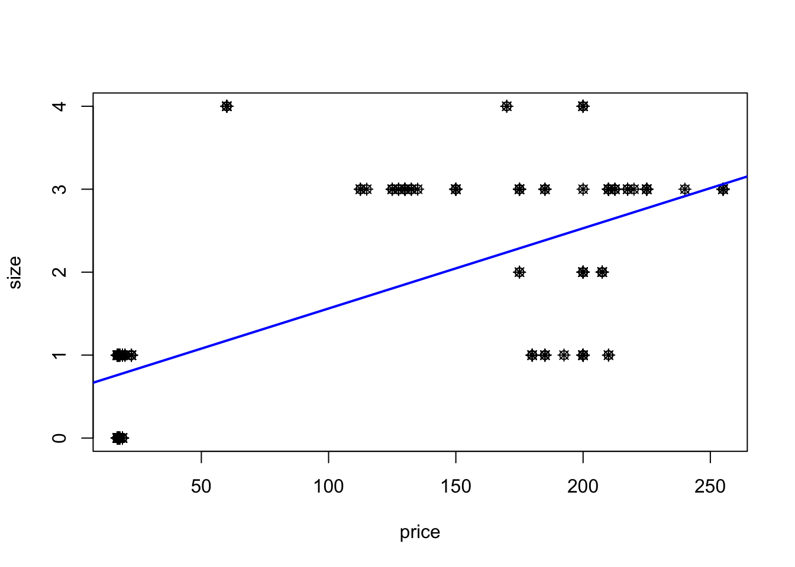
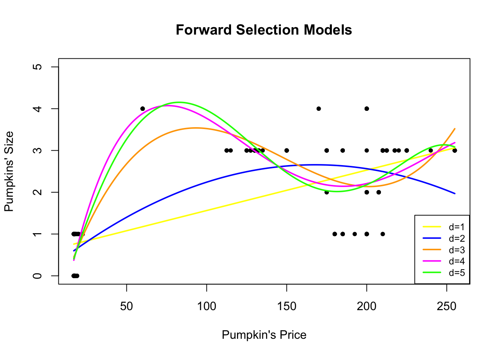
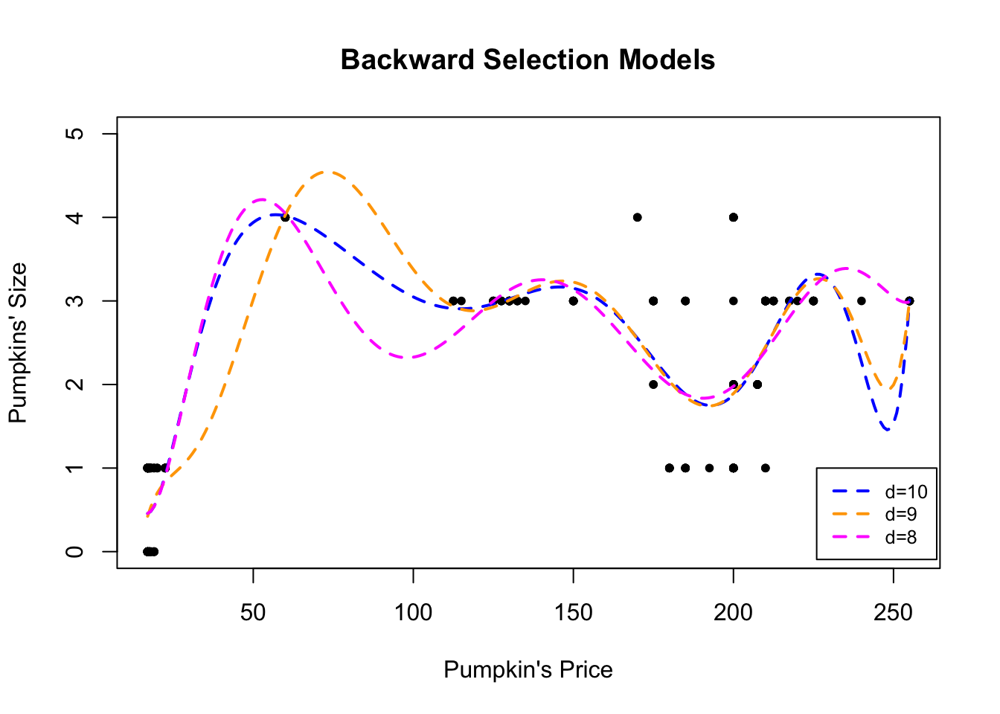
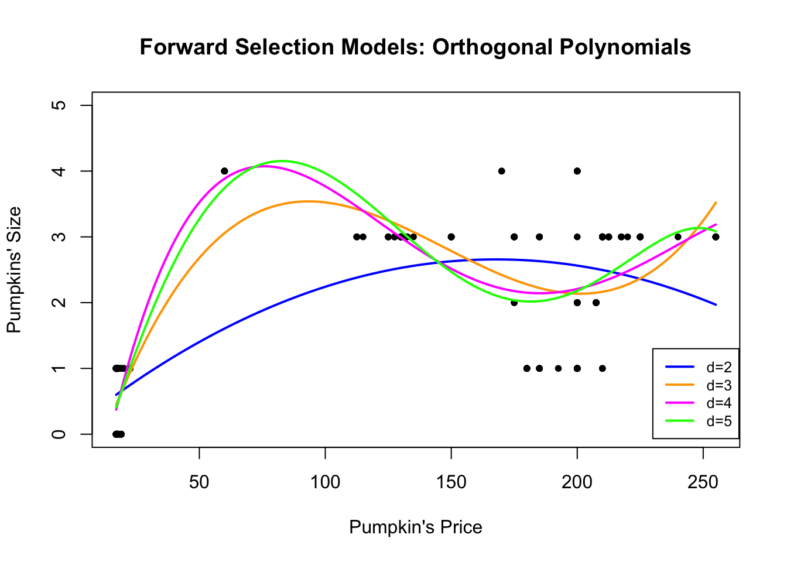
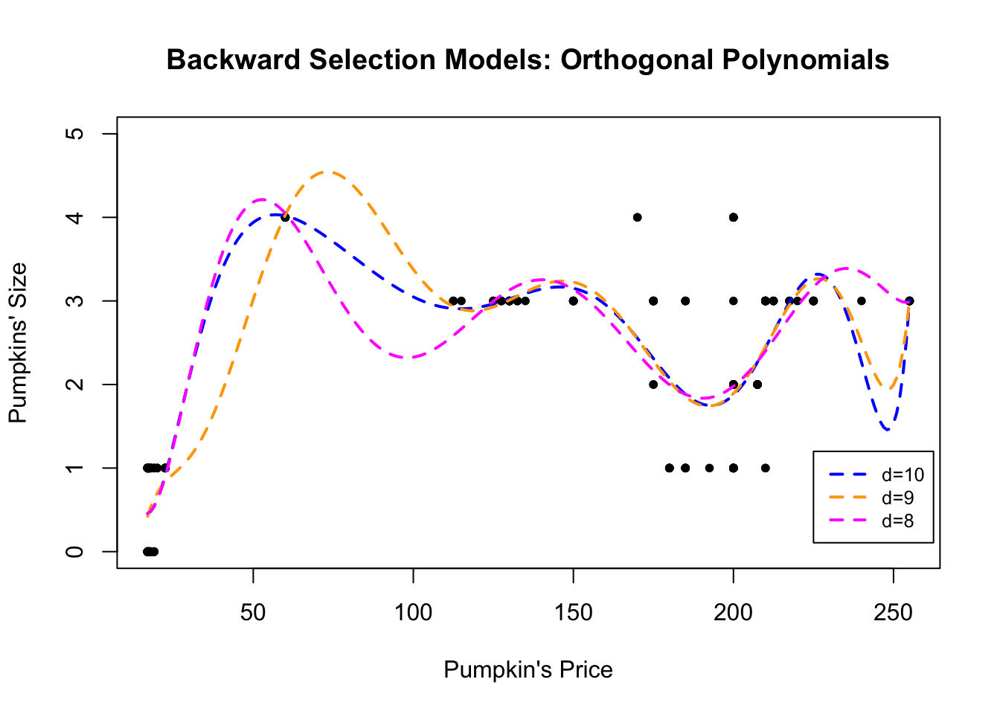

4.1 Polynomial Regression
The simplest form of nonlinear regression is polynomial regression, which extends the linear model by including higher-order powers of the predictor(s). To study this approach we first introduce polynomial basis functions.
4.1.1 Polynomial Basis Functions
If \(b_j(x)\) denotes the \(j\)th basis function, then any function \(f\) that lies in the span of these basis functions can be written
\[f(x) = \sum_{j=0}^{d} b_j(x) \beta_j\] for suitable coefficients \(\beta_j\). Consequently the nonlinear model \(y_i = f(x_i) + \varepsilon_i\) becomes a linear model in the coefficients: \[y_i = \beta_0 + \sum_{j=1}^{d} b_j(x_i) \beta_j + \varepsilon_i\]
Suppose we believe that \(f\) is a polynomial of degree at most 4. A natural basis for the space of all such polynomials is
\[\begin{align*} b_0(x) &= 1\\ b_1(x) &= x\\ b_2(x) &= x^2\\ b_3(x) &= x^3\\ b_4(x) &= x^4 \end{align*}\] The corresponding model is therefore \[y_i = \underbrace{\beta_0 + \beta_1 x_i+\beta_2 x^2_i+ \beta_3 x^3_i + \beta_4 x^4_i}_{= \beta_0 + \sum_{j=1}^{d} b_j(x_i) \beta_j} +\varepsilon_i\]
Illustration of the Polynomial Basis Functions
The following code plots the individual polynomial basis functions of degree 0 through 4 and a linear combination of them.
x = seq(0, 1, by = 0.001)
b0 = rep(1, length(x))
b1 = x
b2 = x^2
b3 = x^3
b4 = x^4
fun1 = 4 * b0 - 10 * b1 + 16 * b2 + 2 * b3 - 10 * b4
par(mfrow = c(2, 3))
plot(x, b0, type = "l", lty = 3, ylab = expression("b"[0] * "(x)=1"))
plot(x, b1, type = "l", lty = 3, ylab = expression("b"[1] * "(x)=x"))
plot(x, b2, type = "l", lty = 3, ylab = expression("b"[2] * "(x)=x"^2))
plot(x, b3, type = "l", lty = 3, ylab = expression("b"[3] * "(x)=x"^3))
plot(x, b4, type = "l", lty = 3, ylab = expression("b"[4] * "(x)=x"^4))
plot(x, fun1, type = "l", ylab = "f(x)", main = expression("f(x) = 4 - 10 x + 16 x"^2 *
"+ 2 x"^3 * "- 10 x"^4), col = "blue", lwd = 2)
4.1.2 Polynomial Regression
From now on we assume that the predictor \(x\) is one-dimensional; the multivariate case will be discussed later. For \(x_i\in\mathbb{R}\) the polynomial regression model of degree \(d\) is \[ y_i = \beta_0 + \beta_1 x_i + \beta_2 x_i^2 + \cdots + \beta_d x_i^d + \varepsilon_i \]
We simply create the new variables \(X_2 = X^2, \ldots, X_d = X^d\) and treat the problem as ordinary multiple linear regression: \[ \begin{pmatrix} y_1 \\ y_2 \\ \vdots \\ y_n \end{pmatrix}_{n \times 1} = \begin{pmatrix} 1 & x_1 & x_1^2 & \cdots & x_1^d \\ 1 & x_2 & x_2^2 & \cdots & x_2^d \\ \vdots & \vdots & \vdots & \ddots & \vdots \\ 1 & x_n & x_n^2 & \cdots & x_n^d \end{pmatrix}_{n \times (d+1)} \begin{pmatrix} \beta_0 \\ \beta_1 \\ \vdots \\ \beta_d \end{pmatrix}_{(d+1) \times 1} + \varepsilon \]
Polynomial Regression Model
A non-linear mean function can be represented with a polynomial basis as
\[y_i = f(x_i) + \varepsilon_i \,\,\, \longrightarrow \,\,\, y_i =\beta_0 + \sum_{j=1}^{d} b_j(x_i) \beta_j + \varepsilon_i\]
where \(d\) is the degree of the polynomial.
How do we choose \(d\)?
Forward Approach: Begin with a linear model and successively add higher-order terms until the most recently added term is no longer statistically significant.
Backward Approach: Start with a high-degree polynomial and successively remove the highest-order term that is not statistically significant.
Once a degree \(d\) has been selected, we ordinarily do not test the significance of the lower-order terms. In other words, a polynomial of degree \(d\) is understood to contain all powers up to \(d\).
Reasoning
In regression we prefer results that are invariant to simple location or scale changes of the predictor. Consider the following illustration. Suppose the data \(\{(y_i, x_i)\}_{i=1}^n\) are generated by \[ y_i = x_i^2 + \varepsilon_i, \quad \varepsilon_i \sim \mathcal{N}(0, \sigma^2). \] If the predictor is recorded instead as \(z_i = x_i + 2\), the same relationship becomes \[ y_i = (z_i - 2)^2 + \varepsilon_i = 4 - 4z_i + z_i^2 + \varepsilon_i. \] A linear term that was absent in the original scale now appears. Consequently, once we decide that a degree-\(d\) polynomial is appropriate we retain every lower-order term.
Exception: If scientific knowledge dictates a specific functional form (for example, a pure quadratic relationship \(Y\approx X^2+C\) arising from a physical law), then it is legitimate to test whether the lower-order terms may be omitted.
The Chicago Pumpkins Example
The file pumpkins.csv contains information regarding the size and price of pumpkins sold in the Chicago area (data can be found here.). Our goal is to predict the pumpkin size from price.
pumpkins = read.csv("data/week4/chicagopumpkins.csv", header = TRUE)
plot(pumpkins$price, pumpkins$size, pch = 20, xlab = "Pumpkin's Price",
ylab = "Pumpkins' Size") A linear fit is visibly inadequate:
A linear fit is visibly inadequate:
##
## Call:
## lm(formula = size ~ price, data = pumpkins)
##
## Residuals:
## Min 1Q Median 3Q Max
## -1.6272 -0.7594 0.2244 0.3728 2.8245
##
## Coefficients:
## Estimate Std. Error t value Pr(>|t|)
## (Intercept) 0.5948315 0.0988339 6.018 6.35e-09 ***
## price 0.0096781 0.0006856 14.117 < 2e-16 ***
## ---
## Signif. codes: 0 '***' 0.001 '**' 0.01 '*' 0.05 '.' 0.1 ' ' 1
##
## Residual standard error: 0.9477 on 246 degrees of freedom
## Multiple R-squared: 0.4475, Adjusted R-squared: 0.4453
## F-statistic: 199.3 on 1 and 246 DF, p-value: < 2.2e-16Although price is statistically significant, \(R^2\) is modest and the scatter plot does not support a straight-line relationship.
plot(size ~ price, data = pumpkins)
points(size ~ price, data = pumpkins, pch = 8)
abline(lm.pumpkins, col = "blue", lwd = 2)
We therefore consider higher-order polynomials, first by forward selection and then by backward elimination.
(1) Forward selection. We start with a linear model and add successive powers until the newest term becomes insignificant.
##
## Call:
## lm(formula = size ~ price, data = pumpkins)
##
## Residuals:
## Min 1Q Median 3Q Max
## -1.6272 -0.7594 0.2244 0.3728 2.8245
##
## Coefficients:
## Estimate Std. Error t value Pr(>|t|)
## (Intercept) 0.5948315 0.0988339 6.018 6.35e-09 ***
## price 0.0096781 0.0006856 14.117 < 2e-16 ***
## ---
## Signif. codes: 0 '***' 0.001 '**' 0.01 '*' 0.05 '.' 0.1 ' ' 1
##
## Residual standard error: 0.9477 on 246 degrees of freedom
## Multiple R-squared: 0.4475, Adjusted R-squared: 0.4453
## F-statistic: 199.3 on 1 and 246 DF, p-value: < 2.2e-16##
## Call:
## lm(formula = size ~ price + I(price^2), data = pumpkins)
##
## Residuals:
## Min 1Q Median 3Q Max
## -1.6438 -0.6029 0.3695 0.4895 2.3941
##
## Coefficients:
## Estimate Std. Error t value Pr(>|t|)
## (Intercept) 1.093e-01 1.174e-01 0.932 0.353
## price 3.037e-02 3.208e-03 9.469 < 2e-16 ***
## I(price^2) -9.051e-05 1.375e-05 -6.582 2.8e-10 ***
## ---
## Signif. codes: 0 '***' 0.001 '**' 0.01 '*' 0.05 '.' 0.1 ' ' 1
##
## Residual standard error: 0.8754 on 245 degrees of freedom
## Multiple R-squared: 0.5305, Adjusted R-squared: 0.5267
## F-statistic: 138.4 on 2 and 245 DF, p-value: < 2.2e-16##
## Call:
## lm(formula = size ~ price + I(price^2) + I(price^3), data = pumpkins)
##
## Residuals:
## Min 1Q Median 3Q Max
## -1.2786 -0.4937 -0.1368 0.5531 1.8633
##
## Coefficients:
## Estimate Std. Error t value Pr(>|t|)
## (Intercept) -1.414e+00 1.691e-01 -8.36 4.83e-15 ***
## price 1.256e-01 9.079e-03 13.83 < 2e-16 ***
## I(price^2) -9.845e-04 8.239e-05 -11.95 < 2e-16 ***
## I(price^3) 2.228e-06 2.034e-07 10.95 < 2e-16 ***
## ---
## Signif. codes: 0 '***' 0.001 '**' 0.01 '*' 0.05 '.' 0.1 ' ' 1
##
## Residual standard error: 0.7182 on 244 degrees of freedom
## Multiple R-squared: 0.6853, Adjusted R-squared: 0.6814
## F-statistic: 177.1 on 3 and 244 DF, p-value: < 2.2e-16lm.pumpkins4 = lm(size ~ price + I(price^2) + I(price^3) + I(price^4),
data = pumpkins)
summary(lm.pumpkins4)##
## Call:
## lm(formula = size ~ price + I(price^2) + I(price^3) + I(price^4),
## data = pumpkins)
##
## Residuals:
## Min 1Q Median 3Q Max
## -1.3200 -0.4497 -0.1241 0.5539 1.7925
##
## Coefficients:
## Estimate Std. Error t value Pr(>|t|)
## (Intercept) -2.871e+00 3.782e-01 -7.590 6.83e-13 ***
## price 2.314e-01 2.630e-02 8.800 2.60e-16 ***
## I(price^2) -2.565e-03 3.785e-04 -6.776 9.25e-11 ***
## I(price^3) 1.061e-05 1.973e-06 5.378 1.76e-07 ***
## I(price^4) -1.470e-08 3.443e-09 -4.271 2.80e-05 ***
## ---
## Signif. codes: 0 '***' 0.001 '**' 0.01 '*' 0.05 '.' 0.1 ' ' 1
##
## Residual standard error: 0.6941 on 243 degrees of freedom
## Multiple R-squared: 0.7073, Adjusted R-squared: 0.7025
## F-statistic: 146.8 on 4 and 243 DF, p-value: < 2.2e-16lm.pumpkins5 = lm(size ~ price + I(price^2) + I(price^3) + I(price^4) +
I(price^5), data = pumpkins)
summary(lm.pumpkins5)##
## Call:
## lm(formula = size ~ price + I(price^2) + I(price^3) + I(price^4) +
## I(price^5), data = pumpkins)
##
## Residuals:
## Min 1Q Median 3Q Max
## -1.38082 -0.46537 -0.08211 0.53463 1.91954
##
## Coefficients:
## Estimate Std. Error t value Pr(>|t|)
## (Intercept) -1.691e+00 7.112e-01 -2.378 0.0182 *
## price 1.305e-01 5.791e-02 2.253 0.0251 *
## I(price^2) -2.479e-04 1.244e-03 -0.199 0.8422
## I(price^3) -1.078e-05 1.113e-05 -0.969 0.3333
## I(price^4) 7.118e-08 4.409e-08 1.615 0.1077
## I(price^5) -1.248e-10 6.386e-11 -1.954 0.0519 .
## ---
## Signif. codes: 0 '***' 0.001 '**' 0.01 '*' 0.05 '.' 0.1 ' ' 1
##
## Residual standard error: 0.6901 on 242 degrees of freedom
## Multiple R-squared: 0.7118, Adjusted R-squared: 0.7059
## F-statistic: 119.6 on 5 and 242 DF, p-value: < 2.2e-16The fifth-order term has a \(p\)-value of 0.0519, which exceeds the conventional 5% threshold. We therefore stop at degree 4. The fitted model is \[\hat{y}_i = \hat{\beta}_0 + \hat{\beta}_1 x + \hat{\beta}_2 x^2 + \hat{\beta}_3 x^3 + \hat{\beta}_4 x^4 \]
newprice = data.frame(price = seq(17, 255, 1))
plot(pumpkins$price, pumpkins$size, pch = 20, ylim = c(0, 5),
xlab = "Pumpkin's Price", ylab = "Pumpkins' Size", main = "Forward Selection Models")
lines(newprice$price, predict(lm.pumpkins, newprice), col = "yellow",
lty = 1, lwd = 2)
lines(newprice$price, predict(lm.pumpkins2, newprice), col = "blue",
lty = 1, lwd = 2)
lines(newprice$price, predict(lm.pumpkins3, newprice), col = "orange",
lty = 1, lwd = 2)
lines(newprice$price, predict(lm.pumpkins4, newprice), col = "magenta",
lty = 1, lwd = 2)
lines(newprice$price, predict(lm.pumpkins5, newprice), col = "green",
lty = 1, lwd = 2)
legend(230, 1.45, legend = c("d=1", "d=2", "d=3", "d=4", "d=5"),
col = c("yellow", "blue", "orange", "magenta", "green"),
lty = c(1, 1, 1, 1, 1), cex = 0.8, lwd = c(2, 2, 2, 2, 2))
The magenta curve corresponds to the selected degree-4 model.
(2) Backward elimination. We begin with a high-degree polynomial and remove terms until the highest-order coefficient is significant.
lm.pumpkins10 = lm(size ~ price + I(price^2) + I(price^3) + I(price^4) +
I(price^5) + I(price^6) + I(price^7) + I(price^8) + I(price^9) +
I(price^10), data = pumpkins)
summary(lm.pumpkins10)##
## Call:
## lm(formula = size ~ price + I(price^2) + I(price^3) + I(price^4) +
## I(price^5) + I(price^6) + I(price^7) + I(price^8) + I(price^9) +
## I(price^10), data = pumpkins)
##
## Residuals:
## Min 1Q Median 3Q Max
## -1.44082 -0.45530 -0.01853 0.53535 2.12546
##
## Coefficients:
## Estimate Std. Error t value Pr(>|t|)
## (Intercept) 1.331e+01 2.671e+01 0.498 0.619
## price -2.191e+00 4.274e+00 -0.513 0.609
## I(price^2) 1.396e-01 2.625e-01 0.532 0.595
## I(price^3) -4.389e-03 8.140e-03 -0.539 0.590
## I(price^4) 8.198e-05 1.458e-04 0.562 0.575
## I(price^5) -9.818e-07 1.624e-06 -0.605 0.546
## I(price^6) 7.731e-09 1.163e-08 0.664 0.507
## I(price^7) -3.970e-11 5.374e-11 -0.739 0.461
## I(price^8) 1.276e-13 1.549e-13 0.824 0.411
## I(price^9) -2.321e-16 2.535e-16 -0.916 0.361
## I(price^10) 1.821e-19 1.800e-19 1.012 0.313
##
## Residual standard error: 0.6483 on 237 degrees of freedom
## Multiple R-squared: 0.7509, Adjusted R-squared: 0.7404
## F-statistic: 71.45 on 10 and 237 DF, p-value: < 2.2e-16lm.pumpkins9 = lm(size ~ price + I(price^2) + I(price^3) + I(price^4) +
I(price^5) + I(price^6) + I(price^7) + I(price^8) + I(price^9),
data = pumpkins)
summary(lm.pumpkins9)##
## Call:
## lm(formula = size ~ price + I(price^2) + I(price^3) + I(price^4) +
## I(price^5) + I(price^6) + I(price^7) + I(price^8) + I(price^9),
## data = pumpkins)
##
## Residuals:
## Min 1Q Median 3Q Max
## -1.4514 -0.4230 -0.0091 0.5177 2.1072
##
## Coefficients:
## Estimate Std. Error t value Pr(>|t|)
## (Intercept) -1.191e+01 9.589e+00 -1.242 0.2154
## price 1.877e+00 1.450e+00 1.295 0.1967
## I(price^2) -1.125e-01 8.271e-02 -1.360 0.1751
## I(price^3) 3.506e-03 2.316e-03 1.514 0.1314
## I(price^4) -6.094e-05 3.623e-05 -1.682 0.0939 .
## I(price^5) 6.252e-07 3.391e-07 1.844 0.0664 .
## I(price^6) -3.875e-09 1.945e-09 -1.993 0.0475 *
## I(price^7) 1.425e-11 6.704e-12 2.125 0.0346 *
## I(price^8) -2.859e-14 1.276e-14 -2.241 0.0259 *
## I(price^9) 2.411e-17 1.030e-17 2.340 0.0201 *
## ---
## Signif. codes: 0 '***' 0.001 '**' 0.01 '*' 0.05 '.' 0.1 ' ' 1
##
## Residual standard error: 0.6483 on 238 degrees of freedom
## Multiple R-squared: 0.7499, Adjusted R-squared: 0.7404
## F-statistic: 79.27 on 9 and 238 DF, p-value: < 2.2e-16lm.pumpkins8 = lm(size ~ price + I(price^2) + I(price^3) + I(price^4) +
I(price^5) + I(price^6) + I(price^7) + I(price^8), data = pumpkins)
summary(lm.pumpkins8)##
## Call:
## lm(formula = size ~ price + I(price^2) + I(price^3) + I(price^4) +
## I(price^5) + I(price^6) + I(price^7) + I(price^8), data = pumpkins)
##
## Residuals:
## Min 1Q Median 3Q Max
## -1.39988 -0.45678 -0.05827 0.53309 2.02119
##
## Coefficients:
## Estimate Std. Error t value Pr(>|t|)
## (Intercept) 9.140e+00 3.347e+00 2.731 0.006791 **
## price -1.368e+00 4.257e-01 -3.215 0.001486 **
## I(price^2) 7.522e-02 2.032e-02 3.702 0.000266 ***
## I(price^3) -1.798e-03 4.783e-04 -3.759 0.000214 ***
## I(price^4) 2.262e-05 6.154e-06 3.675 0.000293 ***
## I(price^5) -1.611e-07 4.541e-08 -3.549 0.000466 ***
## I(price^6) 6.535e-10 1.918e-10 3.407 0.000771 ***
## I(price^7) -1.406e-12 4.316e-13 -3.259 0.001282 **
## I(price^8) 1.246e-15 4.008e-16 3.108 0.002112 **
## ---
## Signif. codes: 0 '***' 0.001 '**' 0.01 '*' 0.05 '.' 0.1 ' ' 1
##
## Residual standard error: 0.6544 on 239 degrees of freedom
## Multiple R-squared: 0.7441, Adjusted R-squared: 0.7355
## F-statistic: 86.87 on 8 and 239 DF, p-value: < 2.2e-16Starting from degree 10 we arrive at a degree-9 model. The corresponding fits are shown below.
newprice = data.frame(price = seq(17, 255, 1))
plot(pumpkins$price, pumpkins$size, ylim = c(0, 5), pch = 20,
xlab = "Pumpkin's Price", ylab = "Pumpkins' Size", main = "Backward Selection Models")
lines(newprice$price, predict(lm.pumpkins10, newprice), col = "blue",
lty = 2, lwd = 2)
lines(newprice$price, predict(lm.pumpkins9, newprice), col = "orange",
lty = 2, lwd = 2)
lines(newprice$price, predict(lm.pumpkins8, newprice), col = "magenta",
lty = 2, lwd = 2)
legend(226, 1, legend = c("d=10", "d=9", "d=8"), col = c("blue",
"orange", "magenta"), lty = c(2, 2, 2), cex = 0.8, lwd = 2)
The magenta curve is the degree-9 fit selected by backward elimination.
As always, the final model should be subjected to the usual residual diagnostics.
4.1.3 Orthogonal Polynomials
High-degree polynomials are generally not recommended: they tend to be numerically unstable, hard to interpret, and the successive powers \(x,x^2,\dots,x^d\) are highly correlated, producing severe multicollinearity. One remedy is to work with orthogonal polynomials
\[y_i=\beta_0+\beta_1z_1+\ldots+\beta_d z_d+\varepsilon_i\]
where each $ z_j $ is a polynomial of exact degree \(j\) constructed so that
\[z_j^\top z_k = 0 \quad\text{for all }j\neq k.\]
The Chicago Pumpkins Example In R the function poly generates orthogonal polynomial bases. The forward- and backward-selection procedures can be repeated with orthogonal polynomials as follows.
# Forward Selection
lm.pumpkinsO2 = lm(size ~ poly(price, 2), data = pumpkins)
summary(lm.pumpkinsO2)##
## Call:
## lm(formula = size ~ poly(price, 2), data = pumpkins)
##
## Residuals:
## Min 1Q Median 3Q Max
## -1.6438 -0.6029 0.3695 0.4895 2.3941
##
## Coefficients:
## Estimate Std. Error t value Pr(>|t|)
## (Intercept) 1.70161 0.05559 30.612 < 2e-16 ***
## poly(price, 2)1 13.37846 0.87538 15.283 < 2e-16 ***
## poly(price, 2)2 -5.76139 0.87538 -6.582 2.8e-10 ***
## ---
## Signif. codes: 0 '***' 0.001 '**' 0.01 '*' 0.05 '.' 0.1 ' ' 1
##
## Residual standard error: 0.8754 on 245 degrees of freedom
## Multiple R-squared: 0.5305, Adjusted R-squared: 0.5267
## F-statistic: 138.4 on 2 and 245 DF, p-value: < 2.2e-16##
## Call:
## lm(formula = size ~ poly(price, 3), data = pumpkins)
##
## Residuals:
## Min 1Q Median 3Q Max
## -1.2786 -0.4937 -0.1368 0.5531 1.8633
##
## Coefficients:
## Estimate Std. Error t value Pr(>|t|)
## (Intercept) 1.7016 0.0456 37.313 < 2e-16 ***
## poly(price, 3)1 13.3785 0.7182 18.628 < 2e-16 ***
## poly(price, 3)2 -5.7614 0.7182 -8.022 4.35e-14 ***
## poly(price, 3)3 7.8672 0.7182 10.954 < 2e-16 ***
## ---
## Signif. codes: 0 '***' 0.001 '**' 0.01 '*' 0.05 '.' 0.1 ' ' 1
##
## Residual standard error: 0.7182 on 244 degrees of freedom
## Multiple R-squared: 0.6853, Adjusted R-squared: 0.6814
## F-statistic: 177.1 on 3 and 244 DF, p-value: < 2.2e-16##
## Call:
## lm(formula = size ~ poly(price, 4), data = pumpkins)
##
## Residuals:
## Min 1Q Median 3Q Max
## -1.3200 -0.4497 -0.1241 0.5539 1.7925
##
## Coefficients:
## Estimate Std. Error t value Pr(>|t|)
## (Intercept) 1.70161 0.04407 38.608 < 2e-16 ***
## poly(price, 4)1 13.37846 0.69408 19.275 < 2e-16 ***
## poly(price, 4)2 -5.76139 0.69408 -8.301 7.22e-15 ***
## poly(price, 4)3 7.86718 0.69408 11.335 < 2e-16 ***
## poly(price, 4)4 -2.96423 0.69408 -4.271 2.80e-05 ***
## ---
## Signif. codes: 0 '***' 0.001 '**' 0.01 '*' 0.05 '.' 0.1 ' ' 1
##
## Residual standard error: 0.6941 on 243 degrees of freedom
## Multiple R-squared: 0.7073, Adjusted R-squared: 0.7025
## F-statistic: 146.8 on 4 and 243 DF, p-value: < 2.2e-16##
## Call:
## lm(formula = size ~ poly(price, 5), data = pumpkins)
##
## Residuals:
## Min 1Q Median 3Q Max
## -1.38082 -0.46537 -0.08211 0.53463 1.91954
##
## Coefficients:
## Estimate Std. Error t value Pr(>|t|)
## (Intercept) 1.70161 0.04382 38.831 < 2e-16 ***
## poly(price, 5)1 13.37846 0.69009 19.387 < 2e-16 ***
## poly(price, 5)2 -5.76139 0.69009 -8.349 5.35e-15 ***
## poly(price, 5)3 7.86718 0.69009 11.400 < 2e-16 ***
## poly(price, 5)4 -2.96423 0.69009 -4.295 2.53e-05 ***
## poly(price, 5)5 -1.34841 0.69009 -1.954 0.0519 .
## ---
## Signif. codes: 0 '***' 0.001 '**' 0.01 '*' 0.05 '.' 0.1 ' ' 1
##
## Residual standard error: 0.6901 on 242 degrees of freedom
## Multiple R-squared: 0.7118, Adjusted R-squared: 0.7059
## F-statistic: 119.6 on 5 and 242 DF, p-value: < 2.2e-16newprice = data.frame(price = seq(17, 255, 1))
plot(pumpkins$price, pumpkins$size, pch = 20, ylim = c(0, 5),
xlab = "Pumpkin's Price", ylab = "Pumpkins' Size", main = "Forward Selection Models: Orthogonal Polynomials")
lines(newprice$price, predict(lm.pumpkinsO2, newprice), col = "blue",
lty = 1, lwd = 2)
lines(newprice$price, predict(lm.pumpkinsO3, newprice), col = "orange",
lty = 1, lwd = 2)
lines(newprice$price, predict(lm.pumpkinsO4, newprice), col = "magenta",
lty = 1, lwd = 2)
lines(newprice$price, predict(lm.pumpkinsO5, newprice), col = "green",
lty = 1, lwd = 2)
legend(230, 1.3, legend = c("d=2", "d=3", "d=4", "d=5"), col = c("blue",
"orange", "magenta", "green"), lty = c(1, 1, 1, 1), cex = 0.8,
lwd = c(2, 2, 2, 2))
# Backward Selection
lm.pumpkinsO10 = lm(size ~ poly(price, 10), data = pumpkins)
summary(lm.pumpkinsO10)##
## Call:
## lm(formula = size ~ poly(price, 10), data = pumpkins)
##
## Residuals:
## Min 1Q Median 3Q Max
## -1.44082 -0.45530 -0.01853 0.53535 2.12546
##
## Coefficients:
## Estimate Std. Error t value Pr(>|t|)
## (Intercept) 1.70161 0.04117 41.335 < 2e-16 ***
## poly(price, 10)1 13.37846 0.64829 20.636 < 2e-16 ***
## poly(price, 10)2 -5.76139 0.64829 -8.887 < 2e-16 ***
## poly(price, 10)3 7.86718 0.64829 12.135 < 2e-16 ***
## poly(price, 10)4 -2.96423 0.64829 -4.572 7.77e-06 ***
## poly(price, 10)5 -1.34841 0.64829 -2.080 0.03861 *
## poly(price, 10)6 -1.45456 0.64829 -2.244 0.02578 *
## poly(price, 10)7 -2.57955 0.64829 -3.979 9.20e-05 ***
## poly(price, 10)8 2.03378 0.64829 3.137 0.00192 **
## poly(price, 10)9 1.51698 0.64829 2.340 0.02012 *
## poly(price, 10)10 0.65591 0.64829 1.012 0.31269
## ---
## Signif. codes: 0 '***' 0.001 '**' 0.01 '*' 0.05 '.' 0.1 ' ' 1
##
## Residual standard error: 0.6483 on 237 degrees of freedom
## Multiple R-squared: 0.7509, Adjusted R-squared: 0.7404
## F-statistic: 71.45 on 10 and 237 DF, p-value: < 2.2e-16##
## Call:
## lm(formula = size ~ poly(price, 9), data = pumpkins)
##
## Residuals:
## Min 1Q Median 3Q Max
## -1.4514 -0.4230 -0.0091 0.5177 2.1072
##
## Coefficients:
## Estimate Std. Error t value Pr(>|t|)
## (Intercept) 1.70161 0.04117 41.333 < 2e-16 ***
## poly(price, 9)1 13.37846 0.64833 20.635 < 2e-16 ***
## poly(price, 9)2 -5.76139 0.64833 -8.887 < 2e-16 ***
## poly(price, 9)3 7.86718 0.64833 12.135 < 2e-16 ***
## poly(price, 9)4 -2.96423 0.64833 -4.572 7.76e-06 ***
## poly(price, 9)5 -1.34841 0.64833 -2.080 0.03861 *
## poly(price, 9)6 -1.45456 0.64833 -2.244 0.02578 *
## poly(price, 9)7 -2.57955 0.64833 -3.979 9.20e-05 ***
## poly(price, 9)8 2.03378 0.64833 3.137 0.00192 **
## poly(price, 9)9 1.51698 0.64833 2.340 0.02012 *
## ---
## Signif. codes: 0 '***' 0.001 '**' 0.01 '*' 0.05 '.' 0.1 ' ' 1
##
## Residual standard error: 0.6483 on 238 degrees of freedom
## Multiple R-squared: 0.7499, Adjusted R-squared: 0.7404
## F-statistic: 79.27 on 9 and 238 DF, p-value: < 2.2e-16##
## Call:
## lm(formula = size ~ poly(price, 8), data = pumpkins)
##
## Residuals:
## Min 1Q Median 3Q Max
## -1.39988 -0.45678 -0.05827 0.53309 2.02119
##
## Coefficients:
## Estimate Std. Error t value Pr(>|t|)
## (Intercept) 1.70161 0.04155 40.951 < 2e-16 ***
## poly(price, 8)1 13.37846 0.65437 20.445 < 2e-16 ***
## poly(price, 8)2 -5.76139 0.65437 -8.805 2.71e-16 ***
## poly(price, 8)3 7.86718 0.65437 12.023 < 2e-16 ***
## poly(price, 8)4 -2.96423 0.65437 -4.530 9.32e-06 ***
## poly(price, 8)5 -1.34841 0.65437 -2.061 0.040421 *
## poly(price, 8)6 -1.45456 0.65437 -2.223 0.027162 *
## poly(price, 8)7 -2.57955 0.65437 -3.942 0.000106 ***
## poly(price, 8)8 2.03378 0.65437 3.108 0.002112 **
## ---
## Signif. codes: 0 '***' 0.001 '**' 0.01 '*' 0.05 '.' 0.1 ' ' 1
##
## Residual standard error: 0.6544 on 239 degrees of freedom
## Multiple R-squared: 0.7441, Adjusted R-squared: 0.7355
## F-statistic: 86.87 on 8 and 239 DF, p-value: < 2.2e-16plot(pumpkins$price, pumpkins$size, pch = 20, ylim = c(0, 5),
xlab = "Pumpkin's Price", ylab = "Pumpkins' Size", main = "Backward Selection Models: Orthogonal Polynomials")
lines(newprice$price, predict(lm.pumpkinsO10, newprice), col = "blue",
lty = 2, lwd = 2)
lines(newprice$price, predict(lm.pumpkinsO9, newprice), col = "orange",
lty = 2, lwd = 2)
lines(newprice$price, predict(lm.pumpkinsO8, newprice), col = "magenta",
lty = 2, lwd = 2)
legend(225, 1.2, legend = c("d=10", "d=9", "d=8"), col = c("blue",
"orange", "magenta"), lty = c(2, 2, 2), cex = 0.8, lwd = 2)
4.1.4 Piece-wise Polynomials
When the true mean function \(\mathbb{E}(Y\mid X=x)=f(x)\) is highly oscillatory, a single high-degree polynomial may be required. Such polynomials are often undesirable. An attractive alternative is to use piecewise polynomials:
Partition the range of \(x\) into contiguous intervals.
Inside each interval approximate \(f\) by a low-degree polynomial (typically quadratic or cubic) whose coefficients are allowed to differ across intervals.
Impose continuity (and possibly continuity of derivatives) at the knots that separate the intervals.
The resulting fit is sometimes called broken-stick regression when the pieces are linear. The principal advantage is that each observation influences the fit only locally; the principal disadvantage is that the overall curve is usually less smooth than a single global polynomial of comparable complexity.